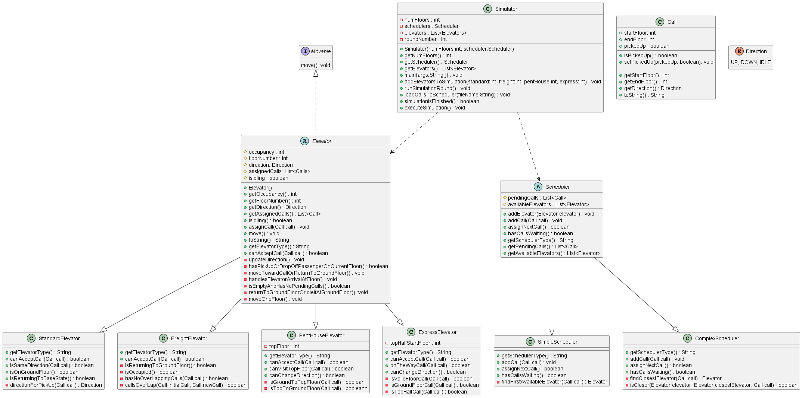

I am currently a second-year computer science major, concentrated in Data Science and Artificial Intelligence at the University of San Diego. I was born and raised in Phnom Penh, Cambodia, and recently moved to San Diego in the Fall of 2024.
Aspiring Data Scientist/Artificial Intelligence Builder
Hobbies:

This project was built to simulate a real world elevator system using object oriented programming. The goal was to apple the four pillars of object oriented programming along side SOLID principles and test driven development. This project provided hands-on experience in software design, clean code practices, and collaborative developmnent using Github.
The simulator manages a building with multiple elevator types and each has its own set of rules for whcih calls can be accepted. A scheduler assigns passenger calls to elevators each round, either using a simple scheduler or a complex scheduler. The simulation runs round by round, moving elevators, picking up and dropping off passengers, and printing the state of every elevator until all the calls are completed and all the elevators are returned to the ground floor.
The project uses abstraction through the abstract Elevator and Scheduler classes which define shared behavior while leaving specific logic to subclasses. The inheritance allowed all the elevator classes to extend from the Elevator class and all the scheduler classes to extend from the Scheduler class. The Movable interface separates the movement behavior following the Interface Segregation Principle. Encapsulation is enforced by keeping fields protected and exposing only necessary methods, and polymorphism allows the simulator to treat all elevators and schedulers through their parameter types without knowing their specific implementations.
Throughout thius project I followed test driven development. I was responsible for implementing several core components of the simulation, focusing on the scheduling logic, the elevator movement behavior, and a couple of the more specific elevators. Working collaboratively with my partner using Github branches and pull requests, we reviewed each other's code and provided feedback before merging into the main branch, ensuring the code quality and is consistent across the project. This experience has strenghtened my understanding of writing clea, well test code and working effectivitely in a team environment usign version control.